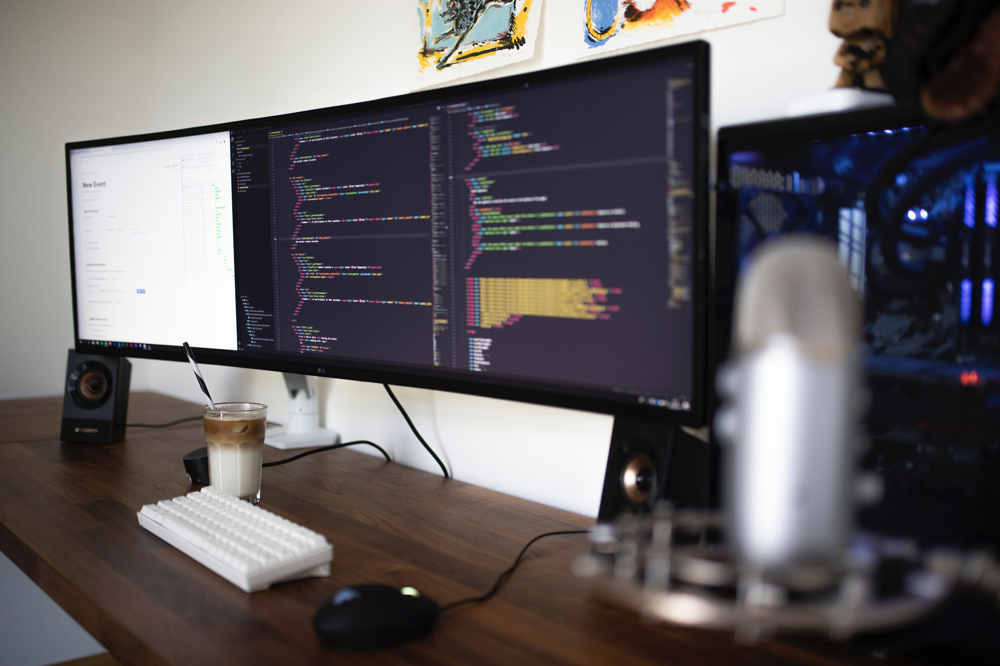

I have chosen to follow a career as a DevOps engineer. It is a profession that is a bit complicated because it is an engineer that wears many hats.
A DevOps engineer you develop as well as perform operation tasks. What this means is that this type of engineer is in charge of writing some code
or at the very least understand the basics of coding. These engineers are responsible for making sure that applications stay available and are tightly
managed in an application lifecycle.
The job outlook for a DevOps engineer is great, there is no shortage of employment to be found. In the span of 10 years
from 2016 to 2026 the growth for this type of employment is supposed to be somewhere around 24 percent according to Bureau of Labor Statistics (BLS).
Click for more information
The pay is also looking very good for these types of engineers. The median salary is a little over $105,000 plus many companies
offer benefits such as work from home, nap rooms, and very accomodating working conditions.
Normally to become a DevOps engineer you need to have a bachelor's degree or have relevant certifications. Many employers however,
will accept experience in lieu of a bachelor's degree. Nowadays there are many trusted certifying bodies that can provide certifications
in various arenas such as cloud, databases, web servers, and security to name a few. It also helps to have a greate understanding of networks
and a bit of hardware knowledge.

Skills that would also help include, problem solving, analytics, communication and creativity. A DevOps engineer should be able to learn and apply
various tools to facilitate application development, these tools include Jenkins, Docker, Kubernetes and many other automation tools. These are not all inclusive Skills
but they serve as a good foundation to become a great engineer.

Click to Watch This Video